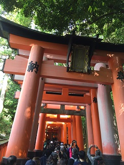
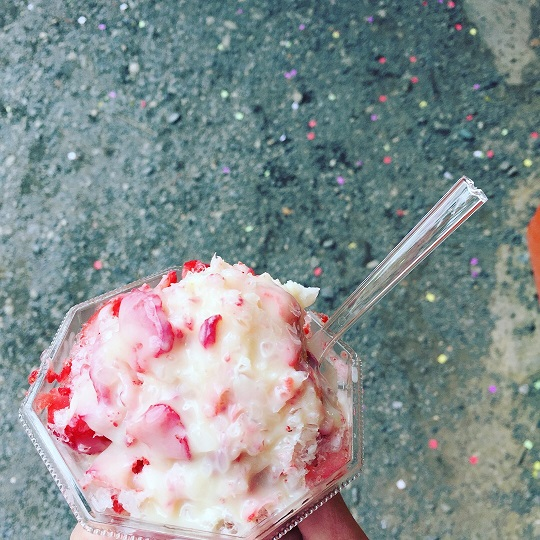
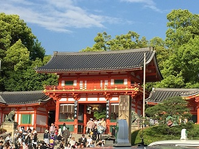
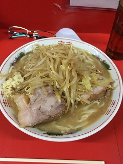

伏見稲荷大社(husimi-inari-taisya)

修学旅行ぶりに行ってきました。
なんだか、少しだけ若返った気がします。
千本鳥居(senbon-torii)

いちごと氷と練乳を混ぜたやつ！(itigo-to-kori-to-rennyu-wo-mazeta-yastu-!)

はじめは良かったんです。はじめは。後半飽きました。
でも、普通に美味しかったし、インスタでも映えに映えまくったので、いちごは偉大だなぁ、
と、思いました。
八坂神社(yasaka-jinjya)

京都の美しい建造物に見とれてしまったせいで、写真は、
入口のこの一枚しか撮れてませんでした。
ラーメン二郎(ra-men-jiro)
